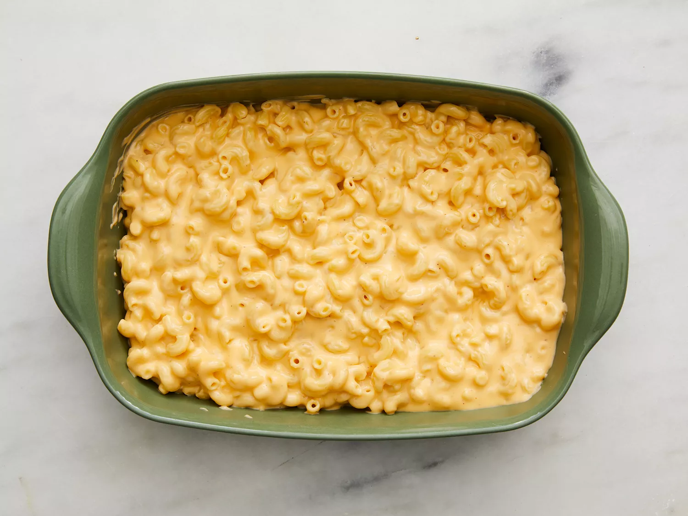

Home
Baked Mac and Cheese
Creamy baked mac and cheese

"Mom's Favorite Baked Mac and Cheese. Photo by DOTDASH MEREDITH FOOD STUDIOS
Prep Time: 10 mins Cook Time: 45 mins Serves: 6
Ingredients
- 2 tablespoons butter
- 1/4 cup finely chopped onion
- 2 tablespoons all-purpose flour
- 2 cups milk
- 3/4 teaspoon salt
- 1/2 teaspoon dry mustard
- 1/4 teaspoon ground black pepper
- 1 (8 ounce package elbow macaroni)
- 2 cups shredded sharp cheddar cheese
- 1 (8 ounce) package processed American cheese, cut into strips
Directions
- Preheat the oven to 350 degrees F (175 degrees C)
- Melt butter in a medium saucepan over medium heat. Sauté onion for 2 minutes
Stir in flour and cook for 1 minute, stirring constantly
- Then stir in milk, salt, mustard, and pepper. Cook, stirring frequently, until mixture boils and thickens.
- Meanwhile, bring a pot of lightly salted water to a boil. Add macaroni and cook until al dente, 8 to 10 minutes; drain.
- Add Cheddar and American cheeses to milk mixture; stir until cheese melts.
- Combine cheese sauce and macaroni in a 2-quart baking dish; mix well.
- Bake in preheated oven until hot and bubbly, about 30 minutes. Let cool 10 minutes before serving.

Photo: DOTDASH MEREDITH FOOD STUDIOS
Recipe from allrecipes.com